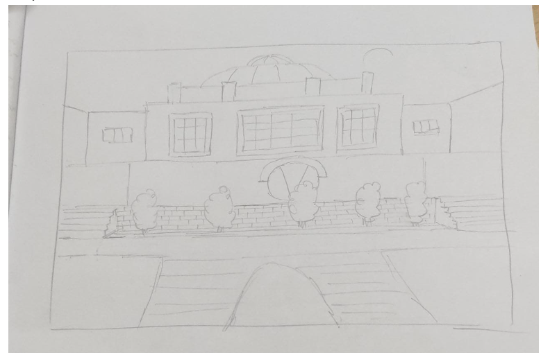
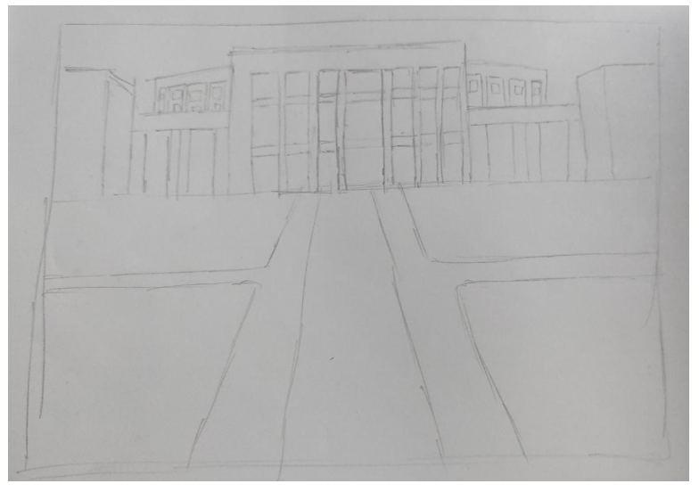
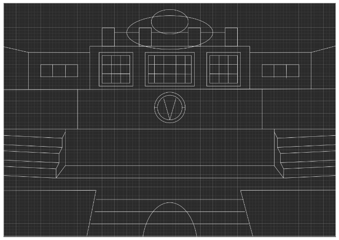
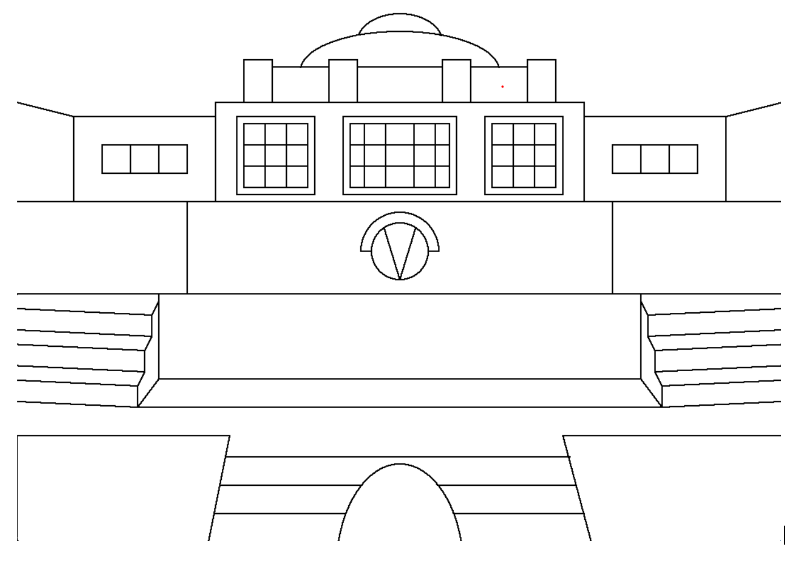
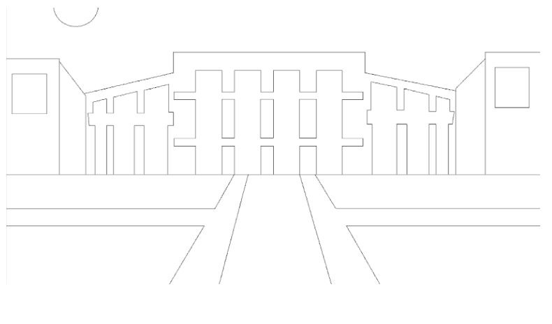

Making the scenes
Drawing the key backgrounds of the locations we wanted the story to occur in required us to start with the rough sketches of the final drawings made on paper :-
- Block-C and platform

- Auditorium and library lawns

After which we redrew these backgrounds on a grid to get the approximate coordinates of all the points and necessary parameters :-

Using the coordinates from the graph drawing and all the routines developed, the scenes were painstakingly put together polygon by polygon :-
 